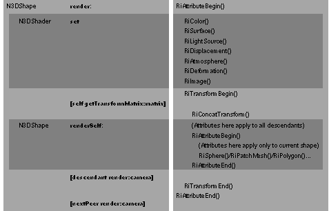

Copyright ©1995 by NeXT Computer, Inc. All Rights Reserved.
| N3DShape |
| Inherits From: | Object | |
| Declared In: | 3Dkit/N3DShape.h |
| Class Description |
| N3DShape provides techniques for representing 3D transformations, for rendering the standard RenderMan surface primitives, and for creating and managing hierarchically organized structures. Using subclasses of N3DShape, your application can model compound shapes made from hierarchically related N3DShape objects.
Creating an N3DShape Subclass While N3DShape provides methods for representing 3D transformations and for creating hierarchically organized structures, you need to create a subclass of N3DShape to perform surface modeling. Your subclass must override the abstract method renderSelf:, calling one or more of the following RenderMan geometric primitive functions: |
| Quadric Surfaces
RiSphere() Polygons RiPolygon() Patches RiPatch() |
| A complete description of these RenderMan geometric primitive functions, including parameter listings and illustrations, can be found in The RenderMan Companion. Sample code using the RiSphere() function call is included in the description of the renderSelf: method.
N3DShapes can be set to render either their surface geometry or their bounding boxes. This ability to switch rendering modes is useful for faster interactive manipulation of shapes. For your N3DShape subclasses to render their bounding boxes, you must provide a way to set the boundingBox instance variable, both when the shape is initialized and when its size changes (that is, when values passed to RenderMan geometric primitives in the renderSelf: method change).
The Shape Hierarchy A shape hierarchy is made up by linking shapes in two kinds of relationships: descendant/ancestor and next peer/previous peer. A shape's descendant inherits its graphics state attributes. A descendant and its peers share the same ancestor, and inherit the same graphics state attributes from that ancestor. In this discussion, the term descendant applies to a shape's direct descendant; the term descendants applies to the direct descendant, its peers, and all descendants of the direct descendant or peers. |
| Figure 17-10. A shape hierarchy
Peers share a common ancestor (their ancestor methods return the same N3DShape object). However, that ancestor has but one descendant, which is the first peer. Each shape sharing an ancestor can apply its own graphics state attributes, independent of its peers. The two shapes at the bottom of the illustration aren't peers--they have different ancestors. The graphics state attributes inherited by a shape's descendants include its coordinate system and shaders. You override these inheritances by setting attributes of the descendant explicitly using the appropriate methods. A shape's bounding box isn't explicitly inherited by its descendants. Instead, the box returned by the getBoundingBox: method is the union of the receiver's bounding box with those of all its descendants--thus representing the smallest volume capable of containing the receiver and its descendants. Be sure to use N3DShape methods to place a shape in the shape hierarchy. Methods for shape hierarchy management include linkPeer:, linkDescendant:, linkAncestor:, unlink, group:, and ungroup. Your application may need to traverse the shape hierarchy to request that each shape apply a setting or respond to a request. To do so, you can add a traversal method such as the following to your subclass of N3DShape: |
 - preTraverse
- preTraverse
 {
{
 /* do the work here */
/* do the work here */
 if ([self descendant] != nil) {
if ([self descendant] != nil) {
 descendant preTraverse];
descendant preTraverse];
 }
}
 if ([self nextPeer] != nil) {
if ([self nextPeer] != nil) {
 [nextPeer preTraverse];
[nextPeer preTraverse];
 }
}
 return self;
return self;
 }
}
| Surface modeling is usually performed only at the leaf nodes of a shape hierarchy; that is, by shapes without descendants.
Transforming Between Coordinate Systems To transform points between the coordinate systems of two N3DShapes, use the methods convertPoints:count:fromAncestor: and convertPoints:count:toAncestor:. To transform points between the 3D coordinate system of a shape and the 2D (PostScript) coordinate system of its camera, use the method convertObjectPoints:count:toCamera:. You can also transform from one coordinate system to another by applying a matrix to a shape or a camera. A matrix is a two-dimensional array that represents a transformation from one coordinate system to another. The RenderMan standard defines a type, RtMatrix, as a 4 x 4 array of floating point values that represents such a transformation between 3D coordinate systems. Each N3DShape maintains three matrices: the transform, the composite transform, and the inverse of the composite transform. While matrix manipulation concepts are beyond the scope of this discussion, you should understand the meanings of these matrices. The transform matrix is the matrix the shape applies when its render: method is invoked. It represents the transformation from the immediate ancestor's coordinate system to its owner's coordinates. Use the methods getTransformMatrix: and setTransformMatrix: to access a shape's transform matrix. The composite transform matrix represents the combined transformations from a distant ancestor--usually the shape at the top of the hierarchy. The composite transform matrix can be used for transforming points from this ancestor's coordinate system to the shape's coordinate system. Use the method getCompositeTransform:relativeToAncestor: to access this matrix. The inverse of the composite transform matrix represents the transformation from its owner's coordinate system to an ancestor's coordinate system. Use the method getInverseCompositeTransform: relativeToAncestor: to access this matrix. The identity matrix represents a normalized coordinate system: one to which no transformations are applied. The global constant N3DIdentityMatrix is defined in 3Dkit/next3d.h. The values in the identity matrix are: |
 {{1, 0, 0, 0},
{{1, 0, 0, 0},
 {0, 1, 0, 0},
{0, 1, 0, 0},
 {0, 0, 1, 0},
{0, 0, 1, 0},
 {0, 0, 0, 1}}
{0, 0, 0, 1}}
| Shaders
Each N3DShape can have one each of the six shader types: surface, displacement, light, imager, volume, and transformation. The shaders belonging to an N3DShape are instances of the N3DShader class; each N3DShader object manages a shading language function. The type of an N3DShader is determined by the shader function which it manages. See the N3DShader class specification for more on shading language functions. Light shader objects are different than light objects. N3DLight is a subclass of shape whose objects are used to light one or more surfaces in a scene. In most cases, you will illuminate the shapes in a scene using N3DLight objects rather than light shaders.
The Render Delegate The render delegate is an N3DShape that renders a specific geometry. Render delegates are an efficient way to render multiple versions of a single shape. Say, for example, you want to render all four tires on an automobile. Each N3DShape representing a tire can have the same render delegate. Each time one of the tire shapes gets a render: message, it invokes the delegate's renderSelf: method. Thus only the render delegate needs to retain the geometric data for the tire. The four shapes using the delegate need only represent the transformation to the origin of the four tire positions. |
| Instance Variables |
| RtMatrix transform;
RtMatrix compositeTransform; RtMatrix inverseCompositeTransform; RtBound boundingBox; N3DShapeName *shapeName; N3DSurfaceType surfaceType; id surfaceShader; id displacementShader; id lightShader; id imagerShader; id volumeShader; id transformationShader; struct _shapeFlags { }shapeFlags; id nextPeer; id previousPeer; id descendant; id ancestor; id renderDelegate; |
| transform | Transformation from ancestor | |
| compositeTransform | Transformation from top of shape hierarchy | |
| inverseCompositeTransform | Transformation to top of shape hierarchy | |
| boundingBox | Three-dimensional bounds of shape | |
| shapeName | Name and id of shape | |
| surfaceType | Surface type for interactive rendering | |
| surfaceShader | Surface shader for photorealistic rendering | |
| displacementShader | Displacement shader for photorealistic rendering | |
| lightShader | Light shader for photorealistic rendering | |
| imagerShader | Imager shader for photorealistic rendering | |
| volumeShader | Volume shader for photorealistic rendering | |
| transformationShader | Transformation shader for photorealistic rendering | |
| shapeFlags.selectable | YES if the shape can be selected | |
| shapeFlags.visible | YES if the shape and its descendants are visible | |
| shapeFlags.ancestorChanged | YES if the shape's ancestor changed | |
| shapeFlags.compositeDirty | YES if the composite and inverse transform matrices need updating | |
| shapeFlags.drawAsBox | YES if this shape renders by drawing its bounding box | |
| shapeFlags.isInstance | YES if this shape has a delegate to perform its rendering | |
| shapeFlags.hasShader | YES if this shape has any shaders associated with it | |
| nextPeer | Next shape in the peer group | |
| previousPeer | Previous shape in the peer group | |
| descendant | Shape descended from this one | |
| ancestor | Shape from which this one descends | |
| renderDelegate | Delegate that performs rendering |
| Method Types |
| Initializing and freeing |
| Rendering the N3DShape |
| Traversing the shape hierarchy |
| Managing the shape hierarchy |
| Shader |
| Surface |
| Bounding box |
| Converting points |
| Selection |
| Visibility |
| Naming shapes |
| Delegate for rendering |
| Transformation matrices |
| Rotation, scaling, translation |
| Archiving |
| Instance Methods |
| ancestor |
| Returns the receiving object's ancestor--the N3DShape above it in the shape hierarchy. If the receiving shape is at the top of its hierarchy, returns nil. The class description includes an illustration and discussion of the shape hierarchy.
See also: |
| awake |
| Invoked after unarchiving to reinitialize the N3DShape object. Do not invoke this method directly. Returns self.
See also: |
| concatTransformMatrix:premultiply: |
| Concatenates aTransform to the N3DShape's current transform matrix. If flag is YES, this method premultiplies the matrix by the aTransform; that is, it applies the effect of aTransform to the receiving shape's coordinate system before applying the effect of its transform matrix. Otherwise, it postmultiplies the transform matrix by aTransform, applying the effect of the transform matrix before applying the effect of aTransform. In either case, it places the result in the receiver's transform instance variable. Returns self.
See also: |
| convertObjectPoints:count:toCamera: |
| count:(int)n toCamera:camera |
| Converts points from the receiver's coordinate system to camera's 2D (PostScript) coordinate system. Returns the converted values by reference in the first two (x and y) coordinates of each RtPoint in points; you should ignore the z coordinates returned in points. Returns self.
See also: |
| convertPoints:count:fromAncestor: |
| count:(int)n fromAncestor:(N3DShape *)theShape |
| Converts points from theShape's coordinate system to the coordinate system of the receiver. If theShape is nil or isn't above the receiver in its shape hierarchy, this method converts from the shape at the top of the receiver's shape hierarchy (its first ancestor). Returns the converted values by reference in points. Returns self. See the class description for a discussion and diagram of the shape hierarchy.
See also: |
| convertPoints:count:toAncestor: |
| Converts points from the receiver's coordinate system to the coordinate system of theShape. If theShape is nil or isn't above the receiver in its shape hierarchy, this method converts to the world shape at the top of the receiver's shape hierarchy. Returns self. See the class description for a discussion and diagram of the shape hierarchy.
See also: |
| descendant |
| Returns the receiver's descendant--the N3DShape below it in the object hierarchy. If the receiving shape has no descendant, returns nil. See the class description for a discussion and diagram of the shape hierarchy.
See also: |
| doesDrawAsBox |
| Returns YES if the receiver is set to draw its bounding box when it renders. For an instance of your subclass of N3DShape to draw its bounding box, you must explicitly set the bounding box when it is initialized and when it is resized (that is, when values passed to RenderMan geometric primitives in the renderSelf: method change). By default, returns NO.
See also: |
| firstAncestor |
| Returns the shape at the top of the receiving N3DShape's hierarchy. See the class description for a discussion and diagram of the shape hierarchy.
See also: |
| firstPeer |
| Returns the left-most peer in the receiver's peer group. The first peer is the direct descendant of the receiver's ancestor. See the class description for a discussion and diagram of the shape hierarchy.
See also: |
| free |
| Frees the receiving object, its descendants, and the descendants' peers. Unlinks the receiving object from its peer group; if the receiver has a next peer and previous peer, they are set to point to each other; if the receiver has no previous peer, its next peer is set as the direct descendant of the ancestor. Frees the receiver's descendant and its descendants and peers by sending a freeAll message to the descendant. See the class description for a discussion and diagram of the shape hierarchy. Returns nil.
See also: |
| freeAll |
| Frees the receiver, its next peer (and all subsequent peers) and its descendants. This method first sends a freeAll message to the next peer, then sends a free message to self. See the class description for a discussion and diagram of the shape hierarchy. Returns nil.
See also: |
| getBoundingBox: |
| Returns, by reference in boundingBox, the union of the receiver's bounding box and its descendant's bounding boxes; thus, the six coordinates in boundingBox represent the volume of the receiver and all its descendants. The returned values are in the coordinates of the receiving N3DShape.
Note that for your subclass of N3DShape to return the correct value in boundingBox, your code must set the boundingBox instance variable when an instance is initialized and whenever it changes size (that is, when values passed to RenderMan geometric primitives in the renderSelf: method change). Returns self. See also: |
| getBounds:inCamera: |
| Returns, by reference in boundingRect, the rectangle that bounds the receiver in theCamera's 2D (PostScript) coordinate system. If theCamera isn't an N3DCamera object, this method generates an exception. Returns self. |
| getCompositeTransformMatrix:relativeToAncestor: |
| Returns, by reference in theMatrix, the matrix representing the transformation from theAncestor's coordinate system to the receiver's coordinate system. If theAncestor is nil or if the receiving N3DShape isn't a descendant of theAncestor, theMatrix represents the transformation from world space to the receiver's coordinate system. See the class description for discussions of the shape hierarchy and transformations. Returns self.
See also: |
| getInverseCompositeTransformMatrix:relativeToAncestor: |
| Returns, by reference in theMatrix, the matrix representing the transformation from the receiver's coordinate system to theAncestor's coordinate system. If theAncestor is nil or if the receiving N3DShape isn't a descendant of theAncestor, theMatrix represents the transformation from the receiver's coordinate system to world space. See the class description for discussions of the shape hierarchy and transformations. Returns self.
See also: |
| getTransformMatrix: |
| Returns, by reference in theMatrix, the receiver's transform matrix: the instance variable representing the transformation from the ancestor's space to the receiver's space. This method is invoked by N3DShape's render: method to get the transformation matrix for the space in which the shape is rendered. Override this method to apply your own manipulation on the transform matrix--and, thereby, on the receiver's space--when rendering. Returns self.
See also: |
| group: |
| Makes the receiver a descendant of toShape while maintaining its position in world space. Invoking this method on a series of N3DShapes, each with the same N3DShape as toShape, causes the receivers to become peers--all descended from toShape. This method is useful, for example, to group a set of N3DShapes after they've been selected by the user.
This method modifies the receiver's transform matrix to reflect the transformation from toShape to the receiver's current position. If toShape has no descendant, the receiver is made its direct descendant using the linkDescendant: method. Otherwise, the receiver is linked by invoking linkPeer: on toShape's descendant. Returns self. See also: |
| init |
| Initializes the receiver, a newly allocated instance of N3DShape. The transform, compositeTransform, and inverseCompositeTransform matrices are normalized (see the class description for a discussion of matrices and transformations between coordinate systems). All shaders are set to nil, as are the peer, ancestor, and descendant pointers. Returns self. |
| isSelectable |
| Returns YES if the receiving N3DShape can be selected. Shapes are selected by the N3DCamera method selectShapesIn:. By default, N3DShapes aren't selectable.
See also: |
| isVisible |
| Returns YES if the receiving N3DShape has been set to render itself. N3DShapes are visible by default.
See also: |
| isWorld |
| Returns YES if the receiving N3DShape is at the top of its shape hierarchy--that is, it has no previous peer or ancestor. Returns NO otherwise. See the class description for a discussion and diagram of the shape hierarchy. |
| lastDescendant |
| Returns the N3DShape at the end of the receiver's descendant chain. This method searches directly below the receiver; it doesn't search peer branches for deeper descendants. Returns self if the receiver has no descendant. See the class description for a discussion and diagram of the shape hierarchy.
See also: |
| lastPeer |
| Returns the N3DShape at the far right of the receiver's peer group. Searches for the first peer whose next peer is nil, beginning with the receiver. See the class description for a discussion and diagram of the shape hierarchy.
See also: |
| linkAncestor: |
| Sets anAncestor as the ancestor of the receiver and its peers. Doesn't reset anAncestor's descendant. Returns the receiver's previous ancestor. See the class description for a discussion and diagram of the shape hierarchy.
See also: |
| linkDescendant: |
| Inserts aDescendant directly below the receiver. aDescendant is made the receiver's descendant, and aDescendant and its peers set the receiver as their ancestor. The receiver's previous descendant is moved to the bottom of aDescendant's sub-tree, that is, made the descendant of its last descendant. See the class description for a discussion and diagram of the shape hierarchy.
If aDescendant isn't an N3DShape (or subclass thereof), no change is made to the receiver's hierarchy. Returns self. See also: |
| linkPeer: |
| Inserts aPeer as the receiver's next peer. aPeer brings with it any peers and descendants it may have. The receiver's former next peer is moved to the extreme right of aPeer's peer group, made the next peer of aPeer's last peer. If aPeer isn't an N3DShape (or subclass thereof), no change is made to the receiver's hierarchy. See the class description for a discussion and diagram of the shape hierarchy. Returns self.
See also: |
| nextPeer |
| Returns the receiver's next peer--the N3DShape to the right of the receiving N3DShape. If the receiver has no next peer, this method returns nil. See the class description for a discussion and diagram of the shape hierarchy.
See also: |
| preRotateAngle:axis: |
| Rotates the receiver about an axis defined by referencePoint and the origin of its coordinate system. The receiving shape's transform matrix is premultiplied by the rotation matrix; that means the rotation is applied to the N3DShape's own coordinate system rather than that of its ancestor. The resulting transformation is stored in the receiver's transform matrix. Both referencePoint and the origin are defined in the receiver's coordinate system. Returns self.
See also: |
| preScale::: |
| :(float)yScaleFactor :(float)zScaleFactor |
| Scales the receiver. A separate scale factor is applied to each of the receiving shape's dimensions. The receiving shape's transform matrix is premultiplied by the scaling matrix; that means the scaling is applied to the N3DShape's own coordinate system rather than that of its ancestor. The resulting transformation is stored in the receiver's transform matrix. Returns self.
See also: |
| preScaleUniformly: |
| Scales the receiver. This method works by invoking preScale::: with scaleFactor for all three arguments. Returns self.
See also: |
| preTranslate::: |
| :(float)yTranslation :(float)zTranslation |
| Translates the receiver. A separate translation is applied along each of the receiving shape's axes. The receiving shape's transform matrix is premultiplied by the translation matrix; that is, the translation is applied to the N3DShape's own coordinate system rather than that of its ancestor. The resulting transformation is stored in the receiver's transform matrix. Returns self.
See also: |
| previousPeer |
| Returns the receiver's previous peer, the N3DShape to the immediate left of the receiver. If the receiver is the first peer in its peer group, returns nil.
See also: |
| read: |
| Reads the receiver from the typed stream stream. Returns self.
See also: |
| removeRenderDelegate |
| Removes and returns the render delegate for the receiver. See the class description for a discussion of the render delegate.
See also: |
| render: |
| This method renders the N3DShape, its descendants, and its peers. The diagram shows the sequence of 3D Graphics Kit methods and RenderMan functions invoked by render:. |
|  |
| Figure 17-11. Sequence of 3D Kit and RenderMan calls in render:
After invoking RiAttributeBegin(), this method invokes set on each of the N3DShape's N3DShaders, which in turn invoke the appropriate RenderMan shader function. Next, this method applies the shape's transformation by invoking getTransformMatrix: on self and applying the matrix returned in RiConcatTransform(). It then invokes renderSelf: (or renderSelfAsBox:) to actually render the shape using the transformation and shaders applied. After rendering the shape, this method invokes render: on the N3DShape's descendant, which thus inherits the shading and transformation of the ancestor. This method then invokes RiTransformEnd() and RiAttributeEnd() to remove the effect of its transformation and shaders, after which it invokes render: on the N3DShape's next peer. You don't invoke this method directly. It is invoked by the N3DShape's ancestor, previous peer, or N3DCamera when rendering. This method returns self. See also: |
| renderDelegate |
| Returns the receiver's rendering delegate, the N3DShape whose renderSelf: method is invoked each time the receiver's render: method is invoked.
See also: |
| renderSelf: |
| This abstract method does nothing, returns self. Override this method to do custom rendering in a subclass of N3DShape. For example, to create a subclass of N3DShape that draws a sphere, you'd implement this method as follows: |
 - renderSelf:(N3DCamera *)theCamera
- renderSelf:(N3DCamera *)theCamera
 {
{
 /* attributes here apply to the receiver and descendants */
/* attributes here apply to the receiver and descendants */
 RiAttributeBegin();
RiAttributeBegin();
 /* attributes here apply only to the receiver */
/* attributes here apply only to the receiver */
 RiSphere(myRadius, myZMax, myZMin, mySweepAngle, RI_NULL);
RiSphere(myRadius, myZMax, myZMin, mySweepAngle, RI_NULL);
 RiAttributeEnd();
RiAttributeEnd();
 return self;
return self;
 }
}
| A list of RenderMan geometric primitive functions is included in the class description at the beginning of this discussion. See The RenderMan Companion for a complete description of the RenderMan language and its various primitives.
It's recommended that you use N3DShape methods for setting RenderMan attributes rather than placing function calls such as RiRotate() and RiScale() in renderSelf:. Using N3DShape API assures that you can query a shape for an accurate reflection of its state. If you choose to apply attributes directly in renderSelf:, make judicious use of RiAttributeBegin() and RiAttributeEnd(). For example, note that in the above code attributes before RiAttributeBegin() apply to the receiver and its descendants; those after RiAttributeBegin() apply only to the receiver. To draw complex shapes, the renderSelf: method can include calls to any number and combination of RenderMan geometric primitive functions. See also: |
| renderSelfAsBox: |
| Renders the receiver's bounding box. If the receiver uses a render delegate, renders the delegate's bounding box. This method gets the points to use in drawing the box by invoking getBoundingBox: on self--thus, the box drawn includes the volume of the receiver and all its descendants. If the N3DShape is set to render itself as a box, this method is invoked instead of renderSelf: each time the shape's render: method is invoked. Returns self.
See also: |
| rotateAngle:axis: |
| Rotates the receiver about the axis defined by referencePoint and the origin of the receiver's coordinate system. The rotation is postmultiplied on the receiving shape's transform matrix; that means the rotation is applied to the ancestor's coordinate system before any other transformations in the receiver's coordinate system. The resulting transformation is stored in the receiver's transform matrix. Both referencePoint and the origin are defined in the receiver's coordinate system. Returns self.
See also: |
| scale::: |
| :(float)yScaleFactor :(float)zScaleFactor |
| Scales the receiver. A separate scale factor is applied along each of the receiving shape's axes. The receiving shape's transform matrix is postmultiplied by the scaling matrix; that means the scaling is applied to the ancestor's coordinate system before any other transformations in the receiver's coordinate system. The resulting transformation is stored in the receiver's transform matrix. Returns self.
See also: |
| scaleUniformly: |
| Scales the receiver. This method works by invoking scale::: with scaleFactor used for all three arguments. Returns self.
See also: |
| setDrawAsBox: |
| Sets the receiver to render only its bounding box. If flag is YES, renderSelfAsBox: is invoked instead of renderSelf: each time the N3DShape's render: method is invoked; if NO, renderSelf: is called. Returns self.
For maximum efficiency and minimum screen clutter, you may want to have an N3DShape render itself as a box, while its descendants and their peers remain invisible. This is useful when a user is interactively manipulating the shapes in an N3DCamera. To use this technique on a specific shape, invoke this method with flag YES, then send the message [descendant setVisible:NO]. See also: |
| setRenderDelegate: |
| Sets the receiver's rendering delegate, the N3DShape whose renderSelf: method is invoked each time the receiver's render: method is invoked. Returns the old render delegate. If aShape isn't a subclass of N3DShape, does nothing and returns nil.
See also: |
| setSelectable: |
| Enables the receiver to be selected. N3DShapes are selected by N3DCamera's selectShapesIn: method. Returns self.
See also: |
| setShader: |
| Sets aShader as the receiver's shader of aShader's type. An N3DShape can have shaders of six types: surface, displacement, light, imager, volume, and transformation. aShader must be an object of the N3DShader class (or subclass thereof).
If you want your N3DShape to have various shader types (for example, surface, displacement, and light shaders), you allocate separate instances of N3DShader--each associated with a shader function of the appropriate type. You then invoke this method three separate times, once for each of the N3DShaders. This method returns the old shader of aShader's type. See also: |
| setShapeName: |
| Sets the receiver's name to aName. Returns self.
See also: |
| setSurfaceType:andDescendants: |
| Sets the surface type used by the interactive renderer. theSurface can be one of five enumerated values defined in the header file 3Dkit/next3d.h: |
| N3D_PointCloud N3D_WireFrame N3D_ShadedWireFrame N3D_FacetedSolids N3D_SmoothSolids |
| Four of these types are shown in the following illustration: |
| Figure 17-12. N3D_PointCloud, N3D_WireFrame, N3D_FacetedSolids, and N3D_SmoothSolids surface types
N3D_ShadedWireFrame renders an N3D_WireFrame surface with depth cueing. The surface type set by this method applies to the receiver and, if flag is YES, to its descendants and their peers. N3DCamera's setSurfaceTypeForAll:chooseHider: method invokes this method on the world shape. The photorealistic renderer uses the surface shader set with the setShader: method. Returns self. See also: |
| setTransformMatrix: |
| Replaces the receiver's current transform matrix with newTransform. Returns self.
See also: |
| setVisible: |
| If flag is YES, the receiver will be rendered each time its render: method is invoked. If NO, the receiver won't be rendered. The N3DShape's descendants (and their peers) also set their visibility to flag. Returns self.
See also: |
| shaderType: |
| Returns the id of the receiver's type N3DShader object. An N3DShape may have six different shaders, one for each of the standard RenderMan shader types. type may be one of the following six constants (defined in the header file ri/slo.h): |
| SLO_TYPE_SURFACE SLO_TYPE_LIGHT SLO_TYPE_DISPLACEMENT SLO_TYPE_VOLUME SLO_TYPE_TRANSFORMATION SLO_TYPE_IMAGER |
| See also: |
| shapeName |
| Returns the receiver's name.
See also: |
| surfaceType |
| Returns the receiver's surface type, which can be one of five enumerated values defined in the header file 3Dkit/next3d.h: |
| N3D_PointCloud N3D_WireFrame N3D_ShadedWireFrame N3D_FacetedSolids N3D_SmoothSolids |
| The default surface type is N3D_WireFrame.
See also: |
| translate::: |
| :(float)yTranslation :(float)zTranslation |
| Translates the receiver. A separate translation is applied along each of the receiving shape's axes. The receiving shape's transform matrix is postmultiplied by the translation matrix; that means the translation is applied to the ancestor's coordinate system before any other transformations in the receiver's coordinate system. The resulting transformation is stored in the receiver's transform matrix. Returns self.
See also: |
| ungroup |
| Removes the receiver from its hierarchy, and promotes its descendant and the descendant's peers to its place. Adjusts the descendant's transformations so that they remain in place relative to the world coordinate system.
If the receiver has a previous peer and next peer, they are set to point to one another. The descendant is then made a peer of the previous peer by the linkPeer: method. If the receiver is at the far left of its peer group, the receiver's descendant is made its ancestor's descendant. The receiver's transform matrix is applied to its descendant and the descendants peers: thus, the descendants retain their orientation to the world coordinate system. The receiver's next peer, previous peer, descendant and ancestor are all set to nil. Returns self. See also: |
| unlink |
| Removes the receiver, its descendants, and the descendants' peers from the shape hierarchy. If the receiver is the direct descendant of its ancestor, its next peer is made the ancestor's descendant. Returns self.
See also: |
| write: |
| Writes the receiving N3DShape to the typed stream stream. Returns self.
See also: |